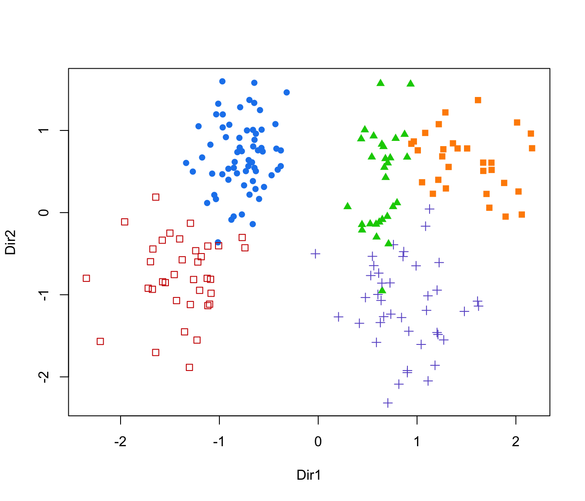
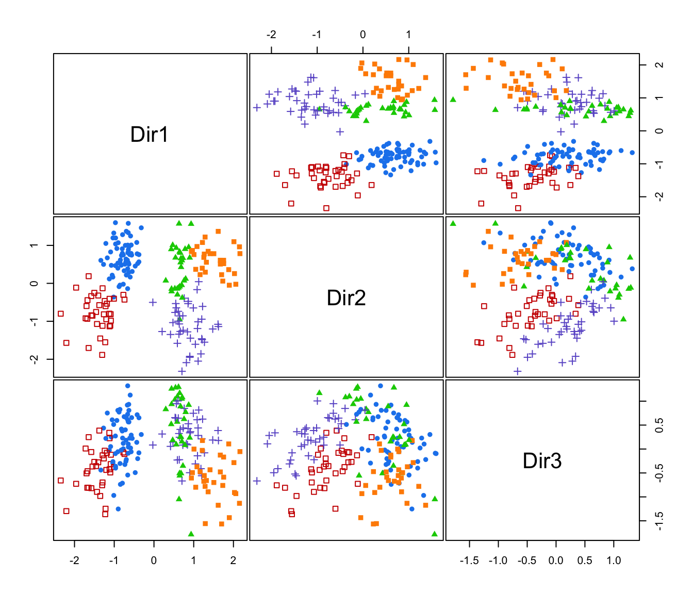

Subset selection for GMMDR directions based on BIC
MclustDRsubsel.RdImplements a subset selection method for selecting the relevant directions spanning the dimension reduction subspace for visualizing the clustering or classification structure obtained from a finite mixture of Gaussian densities.
Usage
MclustDRsubsel(object, G = 1:9,
modelNames = mclust.options("emModelNames"),
...,
bic.stop = 0, bic.cutoff = 0,
mindir = 1,
verbose = interactive())Arguments
- object
An object of class
'MclustDR'resulting from a call toMclustDR.- G
An integer vector specifying the numbers of mixture components or clusters.
- modelNames
A vector of character strings indicating the models to be fitted. See
mclustModelNamesfor a description of the available models.- ...
- bic.stop
A criterion to terminate the search. If maximal BIC difference is less than
bic.stopthen the algorithm stops.
Two tipical values are:0:algorithm stops when the BIC difference becomes negative (default); -Inf:algorithm continues until all directions have been selected. - bic.cutoff
A value specifying how to select simplest ``best'' model within
bic.cutofffrom the maximum value achieved. Setting this to0(default) simply select the model with the largest BIC difference.- mindir
An integer value specifying the minimum number of directions to be estimated.
- verbose
A logical or integer value specifying if and how much detailed information should be reported during the iterations of the algorithm.
Possible values are:0orFALSE:no trace info is shown; 1orTRUE:a trace info is shown at each step of the search; 2:a more detailed trace info is is shown.
Details
The GMMDR method aims at reducing the dimensionality by identifying a set of linear combinations, ordered by importance as quantified by the associated eigenvalues, of the original features which capture most of the clustering or classification structure contained in the data. This is implemented in MclustDR.
The MclustDRsubsel function implements the greedy forward search algorithm discussed in Scrucca (2010) to prune the set of all GMMDR directions. The criterion used to select the relevant directions is based on the BIC difference between a clustering model and a model in which the feature proposal has no clustering relevance. The steps are the following:
1. Select the first feature to be the one which maximizes the BIC difference between the best clustering model and the model which assumes no clustering, i.e. a single component.
2. Select the next feature amongst those not previously included, to be the one which maximizes the BIC difference.
3. Iterate the previous step until all the BIC differences for the inclusion of a feature become less than bic.stop.
At each step, the search over the model space is performed with respect to the model parametrisation and the number of clusters.
Value
An object of class 'MclustDRsubsel' which inherits from 'MclustDR', so it has the same components of the latter plus the following:
- basisx
The basis of the estimated dimension reduction subspace expressed in terms of the original variables.
- std.basisx
The basis of the estimated dimension reduction subspace expressed in terms of the original variables standardized to have unit standard deviation.
References
Scrucca, L. (2010) Dimension reduction for model-based clustering. Statistics and Computing, 20(4), pp. 471-484.
Scrucca, L. (2014) Graphical Tools for Model-based Mixture Discriminant Analysis. Advances in Data Analysis and Classification, 8(2), pp. 147-165
Examples
# \donttest{
# clustering
data(crabs, package = "MASS")
x <- crabs[,4:8]
class <- paste(crabs$sp, crabs$sex, sep = "|")
mod <- Mclust(x)
table(class, mod$classification)
#>
#> class 1 2 3 4
#> B|F 49 0 0 1
#> B|M 11 0 39 0
#> O|F 0 5 0 45
#> O|M 0 50 0 0
dr <- MclustDR(mod)
summary(dr)
#> -----------------------------------------------------------------
#> Dimension reduction for model-based clustering and classification
#> -----------------------------------------------------------------
#>
#> Mixture model type: Mclust (EEV, 4)
#>
#> Clusters n
#> 1 60
#> 2 55
#> 3 39
#> 4 46
#>
#> Estimated basis vectors:
#> Dir1 Dir2 Dir3
#> FL -0.598015 -0.10316 -0.68314
#> RW -0.327540 -0.67796 0.15897
#> CL 0.002013 0.52296 0.17400
#> CW 0.538877 -0.36100 -0.24560
#> BD -0.494675 0.35484 0.64610
#>
#> Dir1 Dir2 Dir3
#> Eigenvalues 1.5907 1.0782 0.099104
#> Cum. % 57.4678 96.4196 100.000000
plot(dr)
drs <- MclustDRsubsel(dr)
summary(drs)
#> -----------------------------------------------------------------
#> Dimension reduction for model-based clustering and classification
#> -----------------------------------------------------------------
#>
#> Mixture model type: Mclust (EVE, 5)
#>
#> Clusters n
#> 1 64
#> 2 36
#> 3 29
#> 4 41
#> 5 30
#>
#> Estimated basis vectors:
#> Dir1 Dir2 Dir3
#> FL 0.659021 -0.1712004 -0.634547
#> RW 0.230063 0.8425324 0.027738
#> CL 0.037967 -0.4701147 0.254548
#> CW -0.548500 0.1994410 -0.299751
#> BD 0.458768 0.0067046 0.664783
#>
#> Dir1 Dir2 Dir3
#> Eigenvalues 1.7179 0.99776 0.20408
#> Cum. % 58.8367 93.01017 100.00000
table(class, drs$classification)
#>
#> class 1 2 3 4 5
#> B|F 50 0 0 0 0
#> B|M 14 36 0 0 0
#> O|F 0 0 19 1 30
#> O|M 0 0 10 40 0
plot(drs, what = "scatterplot")

plot(drs, what = "pairs")

plot(drs, what = "contour")
plot(drs, what = "boundaries")
plot(drs, what = "evalues")
# classification
data(banknote)
da <- MclustDA(banknote[,2:7], banknote$Status)
table(banknote$Status, predict(da)$class)
#>
#> counterfeit genuine
#> counterfeit 100 0
#> genuine 0 100
dr <- MclustDR(da)
summary(dr)
#> -----------------------------------------------------------------
#> Dimension reduction for model-based clustering and classification
#> -----------------------------------------------------------------
#>
#> Mixture model type: MclustDA
#>
#> Classes n Model G
#> counterfeit 100 EVE 2
#> genuine 100 XXX 1
#>
#> Estimated basis vectors:
#> Dir1 Dir2
#> Length -0.07016 -0.25690
#> Left -0.36888 -0.19963
#> Right 0.29525 -0.10111
#> Bottom 0.54683 0.46254
#> Top 0.55720 0.41370
#> Diagonal -0.40290 0.70628
#>
#> Dir1 Dir2
#> Eigenvalues 1.7188 1.0607
#> Cum. % 61.8373 100.0000
drs <- MclustDRsubsel(dr)
summary(drs)
#> -----------------------------------------------------------------
#> Dimension reduction for model-based clustering and classification
#> -----------------------------------------------------------------
#>
#> Mixture model type: MclustDA
#>
#> Classes n Model G
#> counterfeit 100 EEE 2
#> genuine 100 XII 1
#>
#> Estimated basis vectors:
#> Dir1 Dir2
#> Length 0.07016 -0.25690
#> Left 0.36888 -0.19963
#> Right -0.29525 -0.10111
#> Bottom -0.54683 0.46254
#> Top -0.55720 0.41370
#> Diagonal 0.40290 0.70628
#>
#> Dir1 Dir2
#> Eigenvalues 1.7188 1.0607
#> Cum. % 61.8373 100.0000
table(banknote$Status, predict(drs)$class)
#>
#> counterfeit genuine
#> counterfeit 100 0
#> genuine 1 99
plot(drs, what = "scatterplot")
plot(drs, what = "classification")
plot(drs, what = "boundaries")# }